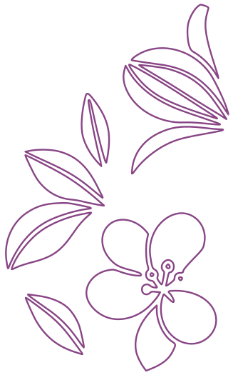
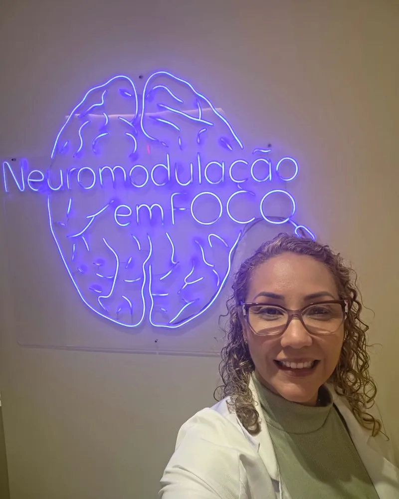
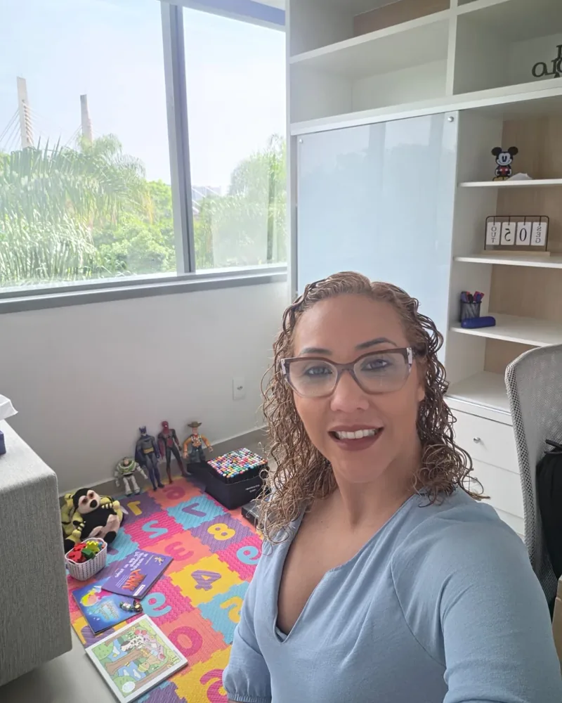
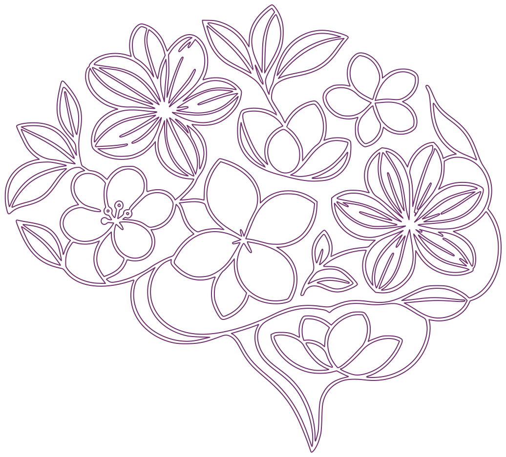

Estimulação transcraniana por corrente contínua (tDCS)
Técnica não invasiva de modulação da atividade cerebral, usada como apoio em quadros emocionais.
Cuidado e parceria para atravessar o que pesa, no seu tempo e do seu jeito.
Agendar uma conversa
CRP 05/79.059 Psicóloga clínica e neuromodulação
E nenhum deles define quem você é.
Também atendo crianças e adolescentes, e faço orientação parental.
Psicóloga clínica (CRP 05/79.059) e assistente social. Sou movida por compreender o comportamento humano, sobretudo em situações de crise, trauma e vulnerabilidade.
Na clínica, uno rigor científico e humanidade: Psicanálise, Terapias Comportamentais de 3ª Onda e Terapia Focada nas Emoções, com base em Psicopatologia, Suicidologia e Neurociências.
Um espaço sem julgamentos, onde você fala no seu ritmo e do seu jeito.
Tudo o que você compartilha é protegido pelo Código de Ética Profissional do Psicólogo.
Atuo no suporte emocional e em emergências, e na Sala Lilás acolhi vítimas de violência doméstica.
Psicanálise, Terapias de 3ª Onda e Terapia Focada nas Emoções, com base em Psicopatologia, Suicidologia e Neurociências.
Uso recursos complementares, como a neuromodulação não invasiva, quando fazem sentido para a sua história.
Desde 2008
Sou Oficial de Saúde do Corpo de Bombeiros Militar do Estado do Rio de Janeiro, no suporte emocional e em emergências.
Na Sala Lilás, acolhi e acompanhei vítimas de violência doméstica.
Ali aprendi que acolher é, antes de tudo, estar presente com segurança e respeito.
É isso que levo para cada atendimento.
Recursos complementares à psicoterapia. A indicação é sempre individual e definida após avaliação clínica.

Técnica não invasiva de modulação da atividade cerebral, usada como apoio em quadros emocionais.
Recurso de modulação autonômica que pode auxiliar na regulação emocional e do estresse.
Uso de luz de baixa intensidade como recurso complementar ao acompanhamento.
A neuromodulação não substitui a psicoterapia nem o acompanhamento médico, quando necessário. Os resultados variam de pessoa para pessoa.
Sem pressa e sem formulário: o primeiro passo é uma conversa.

Você me chama pelo WhatsApp e combinamos o melhor horário.
Conversamos sobre o que você está vivendo e o que espera, sem pressa.
Definimos juntas o caminho, com ou sem recursos complementares.
Encontros regulares para desenvolver autonomia e bem-estar.
Copsico, Dimension Office & Park
Av. Embaixador Abelardo Bueno, 1, Bloco Lagoa 2, sala 210
Barra da Tijuca, Rio de Janeiro, RJ
Horários a combinar.
Atendimento por videochamada, de onde você estiver. Combinamos tudo pelo WhatsApp.
Pagamento Sessões via Pix. Pacotes de neuromodulação podem ser parcelados no cartão de crédito, a combinar (taxas incluídas).

Se quiser, respire comigo antes de escrever. Depois, é só me chamar.
Em crise agora? Ligue para o CVV 188 (24h, gratuito) ou SAMU 192.